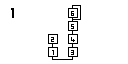

Hi,
I was wondering if there was a possibility to display graphics on an oled display (128x64) that is not from a scope or a string.
For example, I would like to show which algorithm is used in a DX7 patch, instead of displaying the full chart on a computer. I am not familiar with the way tables work. But with an analysis of the Xylobox patch, I see that it is possible to load .raw files that contains waveforms. So I thought it would be possible to draw simple graphs contained in such files and select them with the same midi cc that selects the algorithm.
Do you think it is possible?
example of an image to display:

PS: I've been on the main OLED topic, but I couldn't find a solution without a teensy or arduino, which seems a bit overkill for what I want to do.